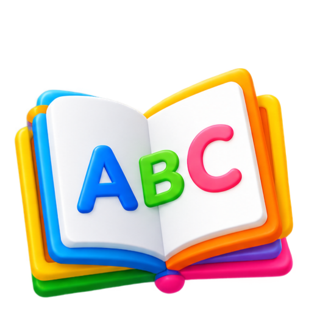

Program Calistung
Program membaca, menulis, dan berhitung dalam Bahasa Indonesia dengan modul Pintar Level 1–4 untuk kesiapan optimal masuk Sekolah Dasar (SD).

✨ Pintar Level 1–4Membaca Lancar
Mengenal suku kata KV, kata KVKVK, huruf sengau, diftong, hingga membaca buku cerita mandiri.
Menulis Rapi
Melatih pembentukan huruf, penyusunan kalimat dari kata acak, hingga dikte paragraf cerita.
Berhitung Logis
Penjumlahan & pengurangan horizontal/bersusun hingga angka 100, perbandingan, & soal cerita.
Pemahaman Bacaan
Memahami isi cerita pendek, menceritakan kembali, & menjawab pertanyaan dengan kalimat lengkap.
Target & Kurikulum Belajar
Tahapan pengembangan kemampuan Calistung secara terstruktur dari tingkat dasar hingga mahir.
Pola Suku Kata Dasar & Berhitung 1–10
🎯 Poin Pembelajaran:
- Baca Tulis: Mengenali bunyi huruf vokal dan konsonan (b, d, f, g, h, j, k, l, r, s, t), menggabungkan 2 bunyi huruf menjadi suku kata KV, menggabungkan 2 suku kata menjadi kata KVKV, serta membaca kalimat sederhana (3-4 kata).
- Berhitung: Mengenal angka 1–10, berhitung maju & mundur (1–10 dan 10–1), penjumlahan 1 digit, penulisan nama bilangan 1–10, serta mengurutkan angka dari terkecil ke terbesar dan sebaliknya.
Kata KVKVK, Pemahaman Cerita & Berhitung 11–20
🎯 Poin Pembelajaran:
- Baca Tulis: Mengenal konsonan lanjutan (c, m, n, p, q, v, w, x, y, z), membaca & menulis kata KVKVK berakhiran (-h, -n, -k, -i, -r, -s, -t), menulis kalimat sederhana (3-5 kata), memahami cerita pendek, serta menjawab pertanyaan teks dengan kalimat lengkap.
- Berhitung: Mengenal angka & nama bilangan 11–20, berhitung maju & mundur (1–20 dan 20–1), penjumlahan 2+1 digit, pengurangan 2-1 digit, serta mengenal bangun datar & bangun ruang.
Huruf Sengau, Diftong, Imbuhan &
Penjumlahan/Pengurangan Bersusun 21–50
🎯 Poin Pembelajaran:
- Baca Tulis: Mengenal bunyi huruf sengau (ng, ny, sy), diftong (ai, au, oi, ei), serta imbuhan awalan (meng-, me-, mem-). Membaca & menulis kata berimbuhan, menulis kalimat panjang struktur benar, membaca cerita pendek mandiri, & menjawab pertanyaan isi cerita.
- Berhitung: Mengenal angka 21–50, melakukan penjumlahan & pengurangan 2 digit (horizontal dan bersusun), serta membandingkan jumlah benda (lebih banyak, lebih sedikit, sama banyak).
Pengayaan Kosakata, Paragraf Cerita & Operasi Hitung 50–100
🎯 Poin Pembelajaran:
- Baca Tulis: Membaca kata 4-5 suku kata (pola KVKVKV), menulis berbagai bentuk kalimat (pernyataan, pertanyaan, perintah), menyusun kalimat dari kata acak, menyusun paragraf dari kalimat acak, membaca buku cerita kompleks, & menceritakan kembali buku yang dibaca.
- Berhitung: Mengenal angka 50–100, penjumlahan & pengurangan 2 digit horizontal/bersusun, membandingkan bilangan dengan simbol (>, <, =), mengenal konsep waktu (hari, jam, siang, malam), serta menyelesaikan soal cerita matematika.
Keunggulan & Metode Belajar
Anak belajar lebih efektif dengan pendekatan yang menyenangkan, bebas screen time, dan berorientasi hasil.

Hands-On Materials
Menggunakan media peraga fisik & kartu baca agar anak paham konsep tanpa menghafal buta.
Brain Boosting Activity
Sesi diawali permainan fokus dan kognitif untuk membangun konsentrasi anak sebelum belajar.
Personal Approach
Pendekatan personal sesuai ritme anak dengan pemantauan progress berkala via Mobile App.
Unlimited Extra Class
Fasilitas kelas tambahan gratis (45 mnt/sesi) jika anak membutuhkan bimbingan ekstra.